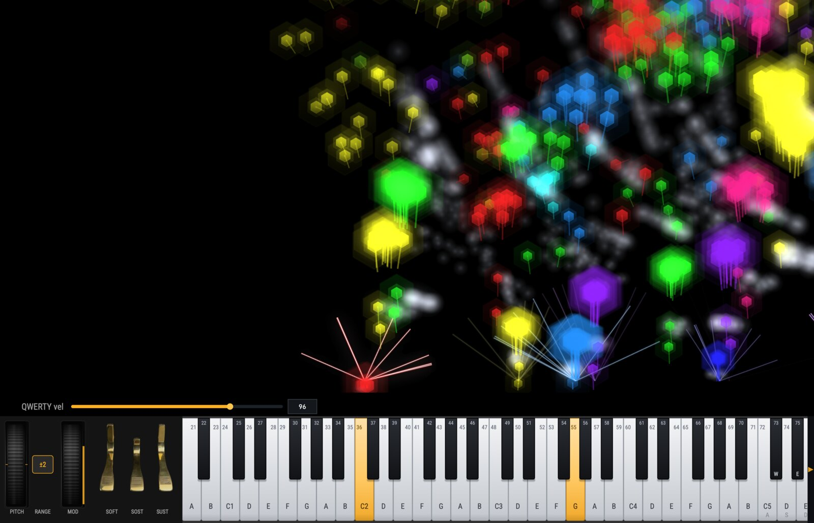
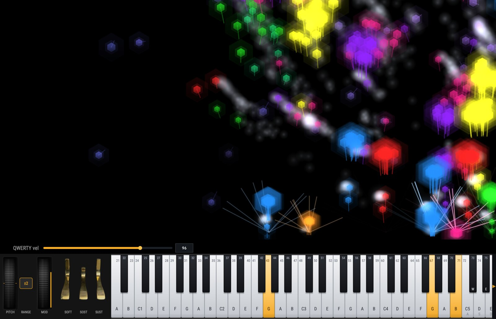
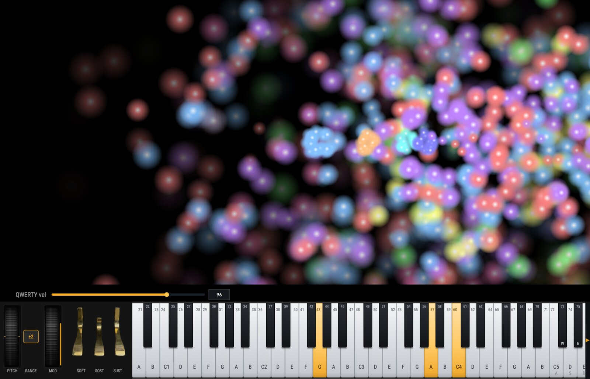
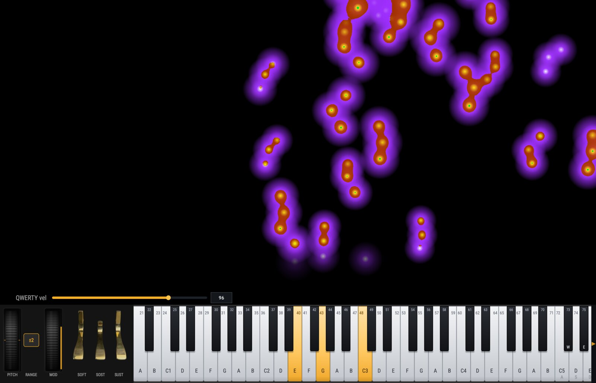
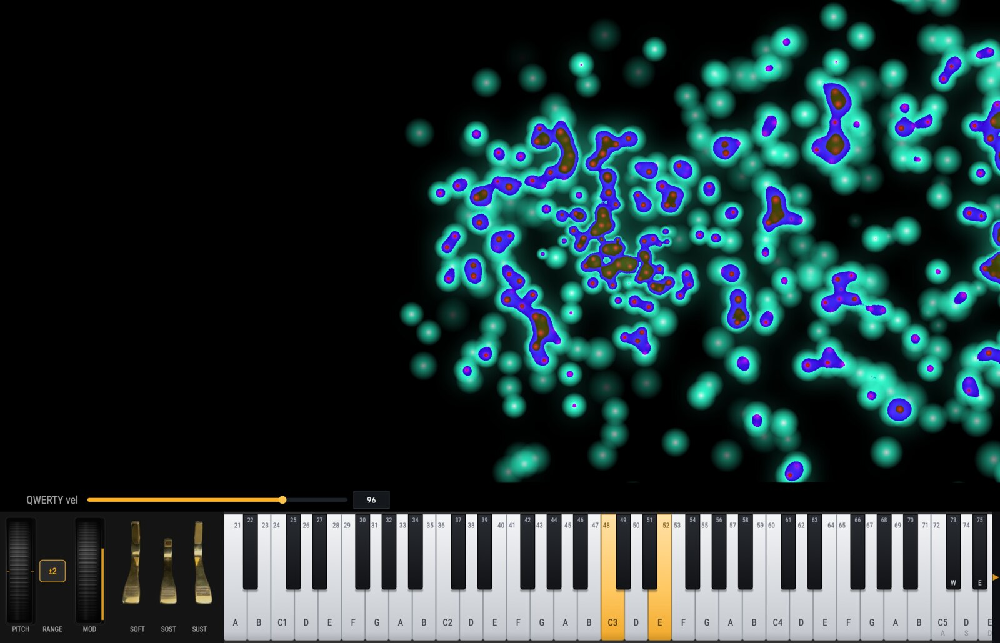
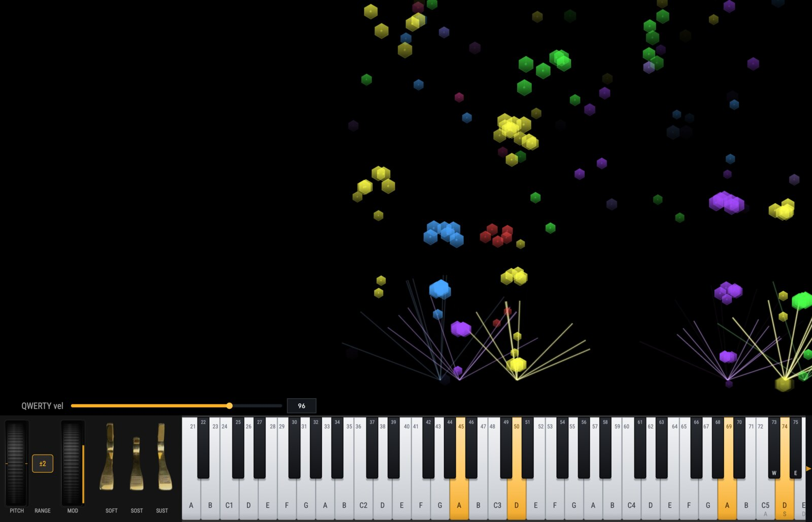

Sparks of Light
A standalone macOS visualizer that turns live MIDI, audio, and MIDI/audio files into real-time particle and note graphics — built for live performance and streaming capture.
The Problem
Performers and streamers want music-reactive visuals without wiring up a browser, a game engine, or a tangle of plugins. Sparks of Light is a single native app: plug in a controller or feed it audio, choose a style, and capture the window. No web stack, no separate browser, no sidecar processes — just a self-contained app that follows the music.
Key Features
- Five visual stylesFlying Particles, Falling Notes, Piano Roll Bars, Burst, and Gem Particles (hexagonal gems with bloom, smoke, streaklets, rays, and wind turbulence)
- Four note sources, one pipelineLive MIDI (CoreMIDI, hot-pluggable), audio-to-MIDI via an embedded BasicPitch model, MIDI file playback, and audio file playback, all funneling through a single lock-free engine
- On-screen 88-key pianoClick to play and drag for glissando, useful for auditioning during capture rehearsals
- Source overrideForce Both, MIDI-only, or Audio-only on the fly, so live playing and audio transcription never fight each other during capture
- Audio-to-MIDI cleanupNoise gate (threshold + confidence), monophonic mode, and key-range and melody-range filters for clean transcription
- Three colour modesPitch-class hue, fixed colour, or a configurable velocity gradient
- Deep per-style tuningSpeed, gravity, scatter, lifetime, trail, brightness, blend mode, and post-process bloom, plus per-gem wind, turbulence, smoke, and rays
- Transport with loop & auto-reloadPlay, pause, stop, loop, and scrub loaded files; MIDI files auto-reload when you re-export them from a DAW
- Unified live settings panel (⌘,) - Every control in one place, live-tuned and persisted; device management snaps back and tells you why when the hardware refuses a change
- OSC controlEvery visual control is drivable over OSC, and the app can snapshot its own state for recall
- Built for OBSVsync'd OpenGL rendering, chroma-green background for keying, full-screen toggle, and toggleable settings, transport, and debug panels
- Self-containedNative Apple Silicon, no web calls, no cloud, no login — the whole experience runs locally
Screenshots
Thirty presets ship in the factory bank. These six were captured live over OSC — the app recalled each preset and snapshotted its own window mid-performance.





